Mollusca: anatomical links and close-view review
v0.6.33 · 77 actual final detail states, 26 credited comparison sheets. The earlier body pass has 100 final states and 52 sheets. These are separate views of the same 26 species.
Follow-up to the initial all-Mollusca body correction. Corrects anatomical link integration and four anatomy descriptions; it adds no measured geometry, biological certification or finished physiological mechanism.
- 77 displayed regional labels bind to retained surface vertices or a sucker instance and follow their existing deformation/parent transform.
- Octopus siphon link attaches to the actual funnel, and the sucker detail view removes the contextual platform.
- Review of 77 final anatomical states rejected tangential/underside camera drafts; explicit regional view directions replace those drafts.
- Cornu no longer claims an absent pedal wave. Oyster mantle tissue is marked not depicted. Mya posterior-shell and Pinna exposed-basal-region descriptions distinguish regions from absent siphons or sediment burial.
The models remain partly stylized and unmeasured. Macro views reveal regular numerical bands, simplified soft tissue, incomplete apertures and missing natural surface diversity. Some target structures remain partly occluded or dark; an attached link is not proof of complete anatomical depiction. Traction, mucus, food capture, filtration, jetting, fluid/contact forces and physiological development remain unfinished. Regional camera directions are display settings, not biological measurements.
Original numerical geometry/surface code follows the project MIT license. No organism photograph or AI image was generated. Reference pixels retain the exact individual creators and grants below. Each comparison sheet includes a resized reference; reuse it under that photograph’s applicable license, including attribution/share-alike where required. Do not apply MIT to the photographs.
Octopus vulgaris · Common octopus
Current model · Body changes and biological sources
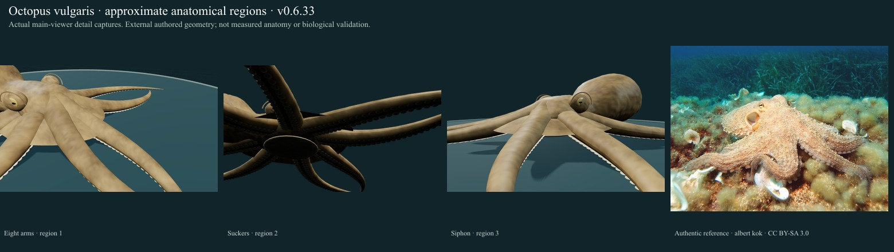
Reference: albert kok · CC BY-SA 3.0. Source caption, exact delivered checksum and scientific access scope remain in the linked body report.
- Eight arms: Explore and grip surfaces.
- Suckers: Attach and sense contact.
- Siphon: Expels water for jet propulsion.
Still unresolved: Mantle/head ratios, papilla fields, sucker number/spacing, arm lengths and contact mechanics remain unmeasured. Oral beak and internal organs are omitted; no live camouflage, suction, force, fluid, prey handling or jet escape. The source-labelled Commons animal has no verified locality here; the O. vulgaris complex caveat remains. In detail review the funnel remains partly occluded by neighbouring arms; underside sucker detail is dark. The link is now attached to the actual funnel mesh, not the mantle.
Lymnaea stagnalis · Great pond snail
Current model · Body changes and biological sources
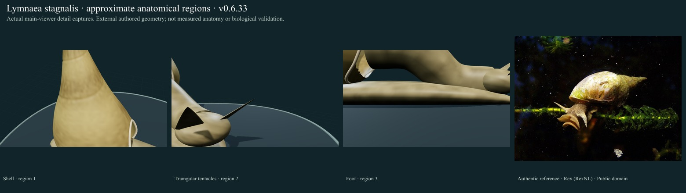
Reference: Rex (RexNL) · Public domain. Source caption, exact delivered checksum and scientific access scope remain in the linked body report.
- Shell: Open dextral-display high-spired shell with authored growth wrinkles; whorl geometry and apertural union remain approximate.
- Triangular tentacles: One pair of flattened triangular tentacles with eyes near their bases; gesture is illustrative.
- Foot: Rounded supported foot with mantle/head bridge. No mucus rheology, ciliary field or calibrated glide.
Still unresolved: Whorl profile, chirality diagnosis, aperture edge, soft-body insertion, pigmentation and ciliary locomotion remain qualitative; no feeding, mucus or physiological mechanism. Detail views still show overly regular shell growth bands and simplified soft tissue, head/foot transitions and tentacle profiles; these are not photorealistic reconstructions. Siphonal canals, apertural unions, mantle bridges and some tissue regions remain partly obscured or approximate.
Cornu aspersum · Garden snail
Current model · Body changes and biological sources
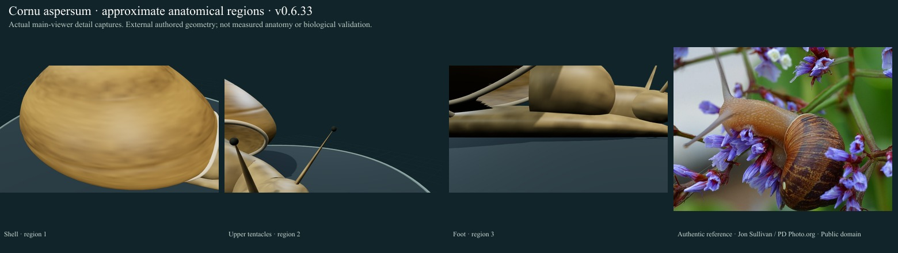
Reference: Jon Sullivan / PD Photo.org · Public domain. Source caption, exact delivered checksum and scientific access scope remain in the linked body report.
- Shell: Open coiled shell with original broken brown band cues and fine authored wrinkles; whorls, aperture and globosity remain approximate.
- Upper tentacles: Two upper sensory stalks with terminal eye cues plus two shorter lower tentacles; no neural or optical simulation.
- Foot: Rounded supported foot. The current bounded glide has no ventral pedal wave, mucus/traction mechanics or calibrated locomotion.
Still unresolved: The shell remains a qualitative envelope rather than a measured helicoidal individual. Flecks, lip, tissue folds, mucus/traction and pedal waves remain incomplete; no realistic eating or retraction. Detail views still show overly regular shell growth bands and simplified soft tissue, head/foot transitions and tentacle profiles; these are not photorealistic reconstructions. Siphonal canals, apertural unions, mantle bridges and some tissue regions remain partly obscured or approximate.
Mytilus edulis · Blue mussel
Current model · Body changes and biological sources
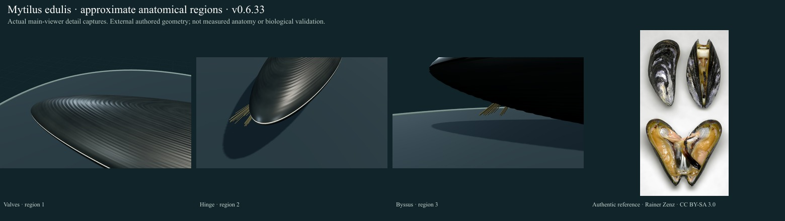
Reference: Rainer Zenz · CC BY-SA 3.0. Source caption, exact delivered checksum and scientific access scope remain in the linked body report.
- Valves: Elongated inequilateral valves with concentric growth cues and no radial ribs; a selected variable shell form, not a Mytilus-complex diagnosis.
- Hinge: Upper valve opens about the retained dorsal hinge line. Adductor, ligament mechanics and exhalant flow are absent.
- Byssus: Curved byssal thread cues retain their substrate anchors during valve gape; no adhesion forces or thread mechanics.
Still unresolved: Shell asymmetry, umbo/ligament, margin fit, erosion and internal soft anatomy remain simplified; the selected photo includes prepared cut/open shells and does not demonstrate live feeding. Detail views retain simplified shell texture, pigment and internal/soft anatomy; several close views show only a regional shell patch. Natural soft-tissue extension and substrate placement remain incomplete.
Pecten maximus · Great scallop
Current model · Body changes and biological sources
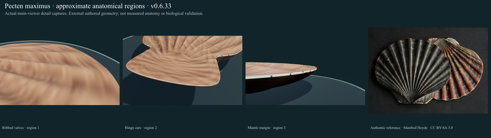
Reference: Manfred Heyde · CC BY-SA 3.0. Source caption, exact delivered checksum and scientific access scope remain in the linked body report.
- Ribbed valves: Broad fan valves with authored radial rib cues; lower right valve strongly convex and upper left comparatively flat. No measured shell scan.
- Hinge ears: Hinge ears integrated in the outline; fine notch, teeth and ligament structure remain incomplete.
- Mantle margin: Small blue-green marginal eye and tentacle cues. Count/positions are selected illustration parameters, not a diagnostic count or optical model.
Still unresolved: Ears/hinge microanatomy, exact rib coordinates, mantle attachment, optics and species-specific muscle/jetting remain approximate. The shell photograph is not live swimming evidence. Narrow byssal/auricular notches are simplified to avoid overlapping loft triangles. Rib amplitude, radial fan angles, pigment and growth rings remain authored rather than measured; no biological swimming propulsion is implemented. Detail views retain simplified shell texture, pigment and internal/soft anatomy; several close views show only a regional shell patch. Natural soft-tissue extension and substrate placement remain incomplete.
Ostrea edulis · European flat oyster
Current model · Body changes and biological sources
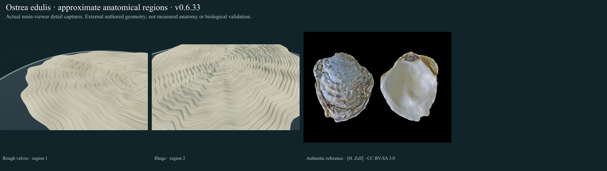
Reference: [H. Zell] · CC BY-SA 3.0. Source caption, exact delivered checksum and scientific access scope remain in the linked body report.
- Rough valves: Irregular rough growth surfaces: left lower cup and comparatively flat right upper valve; natural shell variation is not measured.
- Hinge: Upper valve opens about the short retained hinge line. Ligament/adductor mechanics and internal anatomy remain absent.
- Mantle margin: Biological reference only: mantle tissues, gills and cilia are not depicted in this external-shell reconstruction. This biological structure is not depicted.
Still unresolved: Lamella thickness, local shell damage, substrate cementation and internal anatomy are not reconstructed from measurements; no filtration or flow is calculated. Detail views retain simplified shell texture, pigment and internal/soft anatomy; several close views show only a regional shell patch. Natural soft-tissue extension and substrate placement remain incomplete.
Patella vulgata · Common limpet
Current model · Body changes and biological sources
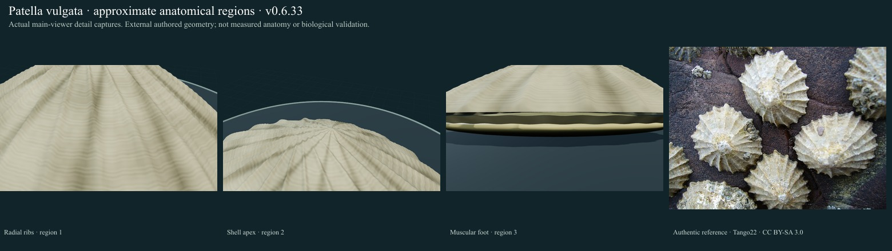
Reference: Tango22 · CC BY-SA 3.0. Source caption, exact delivered checksum and scientific access scope remain in the linked body report.
- Radial ribs: Approximate labelled region in an authored morphology study; compare the cited account and real reference image.
- Shell apex: Approximate labelled region in an authored morphology study; compare the cited account and real reference image.
- Muscular foot: Approximate labelled region in an authored morphology study; compare the cited account and real reference image.
Still unresolved: Shell wear, epibionts, height variation, marginal tentacles/gills and radular grazing remain incomplete; no feeding animation is claimed. Detail views still show overly regular shell growth bands and simplified soft tissue, head/foot transitions and tentacle profiles; these are not photorealistic reconstructions. Siphonal canals, apertural unions, mantle bridges and some tissue regions remain partly obscured or approximate.
Nacella concinna · Antarctic limpet
Current model · Body changes and biological sources
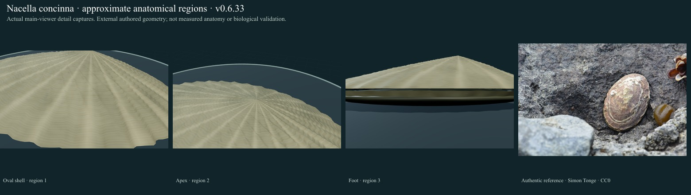
Reference: Simon Tonge · CC0. Source caption, exact delivered checksum and scientific access scope remain in the linked body report.
- Oval shell: Approximate labelled region in an authored morphology study; compare the cited account and real reference image.
- Apex: Approximate labelled region in an authored morphology study; compare the cited account and real reference image.
- Foot: Approximate labelled region in an authored morphology study; compare the cited account and real reference image.
Still unresolved: Intertidal/subtidal plasticity is not fitted to a measured morph. Cephalic/mantle tentacles, encrustation, shell repair and radula are incomplete; no grazing simulation. Detail views still show overly regular shell growth bands and simplified soft tissue, head/foot transitions and tentacle profiles; these are not photorealistic reconstructions. Siphonal canals, apertural unions, mantle bridges and some tissue regions remain partly obscured or approximate.
Fissurella volcano · Volcano keyhole limpet
Current model · Body changes and biological sources
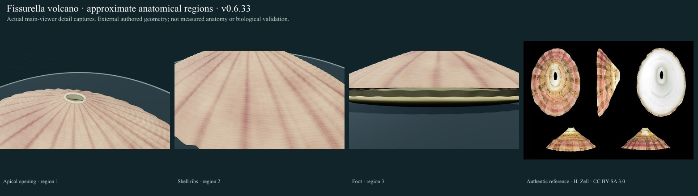
Reference: H. Zell · CC BY-SA 3.0. Source caption, exact delivered checksum and scientific access scope remain in the linked body report.
- Apical opening: Approximate labelled region in an authored morphology study; compare the cited account and real reference image.
- Shell ribs: Approximate labelled region in an authored morphology study; compare the cited account and real reference image.
- Foot: Approximate labelled region in an authored morphology study; compare the cited account and real reference image.
Still unresolved: Aperture elongation, exact ribs and ray arrangement, mantle/foot tissue and fine shell layers remain approximate; empty-shell photos do not establish living posture. Detail views still show overly regular shell growth bands and simplified soft tissue, head/foot transitions and tentacle profiles; these are not photorealistic reconstructions. Siphonal canals, apertural unions, mantle bridges and some tissue regions remain partly obscured or approximate.
Haliotis rufescens · Red abalone
Current model · Body changes and biological sources
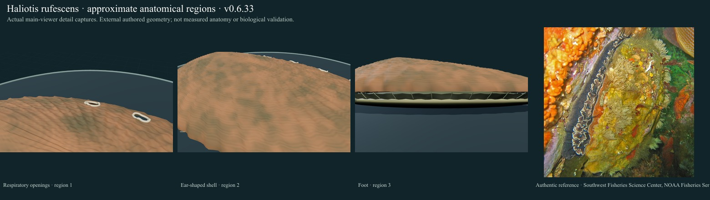
Reference: Southwest Fisheries Science Center, NOAA Fisheries Service · Public domain. Source caption, exact delivered checksum and scientific access scope remain in the linked body report.
- Respiratory openings: Selected four open shell pores; usual reported 3–4 and variable between individuals. Authored openings, not measured aperture geometry.
- Ear-shaped shell: Approximate labelled region in an authored morphology study; compare the cited account and real reference image.
- Foot: Approximate labelled region in an authored morphology study; compare the cited account and real reference image.
Still unresolved: Pore margins/spacing and the weakly coiled apex remain authored. Epibionts in the real photo are not abalone tissue and are not copied onto its skin; head, muscle, radula, nacre and grazing remain incomplete. Detail views still show overly regular shell growth bands and simplified soft tissue, head/foot transitions and tentacle profiles; these are not photorealistic reconstructions. Siphonal canals, apertural unions, mantle bridges and some tissue regions remain partly obscured or approximate.
Haliotis tuberculata · European abalone
Current model · Body changes and biological sources
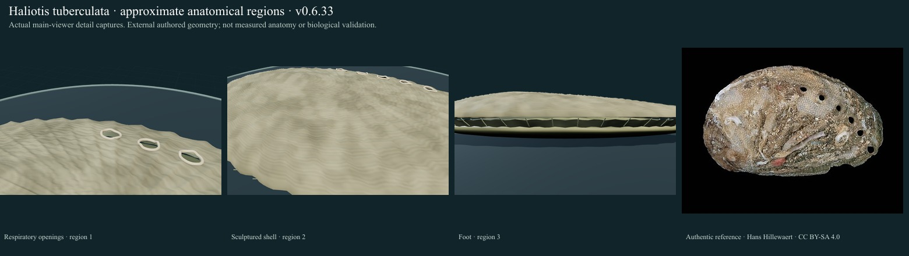
Reference: Hans Hillewaert · CC BY-SA 4.0. Source caption, exact delivered checksum and scientific access scope remain in the linked body report.
- Respiratory openings: Selected six open shell pores; usual reported 5–7 and variable between individuals. Authored openings, not measured aperture geometry.
- Sculptured shell: Approximate labelled region in an authored morphology study; compare the cited account and real reference image.
- Foot: Approximate labelled region in an authored morphology study; compare the cited account and real reference image.
Still unresolved: The reference is an empty encrusted shell; it does not validate the modeled soft tissues or living posture. Apex coiling, pore margins, nacre and grazing remain incomplete. Detail views still show overly regular shell growth bands and simplified soft tissue, head/foot transitions and tentacle profiles; these are not photorealistic reconstructions. Siphonal canals, apertural unions, mantle bridges and some tissue regions remain partly obscured or approximate.
Littorina littorea · Common periwinkle
Current model · Body changes and biological sources
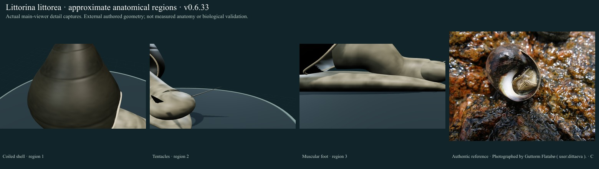
Reference: Photographed by Guttorm Flatabø ( user:dittaeva ). · CC BY-SA 3.0. Source caption, exact delivered checksum and scientific access scope remain in the linked body report.
- Coiled shell: Approximate labelled region in an authored morphology study; compare the cited account and real reference image.
- Tentacles: Approximate labelled region in an authored morphology study; compare the cited account and real reference image.
- Muscular foot: Approximate labelled region in an authored morphology study; compare the cited account and real reference image.
Still unresolved: Shell proportions, white columella, operculum, actual tentacle bars and radula are not fully resolved. A short tentacle bend is not crawling or feeding. Detail views still show overly regular shell growth bands and simplified soft tissue, head/foot transitions and tentacle profiles; these are not photorealistic reconstructions. Siphonal canals, apertural unions, mantle bridges and some tissue regions remain partly obscured or approximate.
Littorina obtusata · Flat periwinkle
Current model · Body changes and biological sources
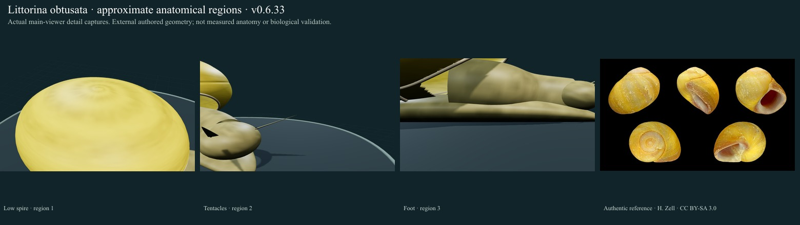
Reference: H. Zell · CC BY-SA 3.0. Source caption, exact delivered checksum and scientific access scope remain in the linked body report.
- Low spire: Approximate labelled region in an authored morphology study; compare the cited account and real reference image.
- Tentacles: Approximate labelled region in an authored morphology study; compare the cited account and real reference image.
- Foot: Approximate labelled region in an authored morphology study; compare the cited account and real reference image.
Still unresolved: Spire/aperture ratios, fine reticulation, operculum and differentiation from L. fabalis need measured specialist review. Yellow is one colour form, not a species diagnosis. Detail views still show overly regular shell growth bands and simplified soft tissue, head/foot transitions and tentacle profiles; these are not photorealistic reconstructions. Siphonal canals, apertural unions, mantle bridges and some tissue regions remain partly obscured or approximate.
Nucella lapillus · Dog whelk
Current model · Body changes and biological sources
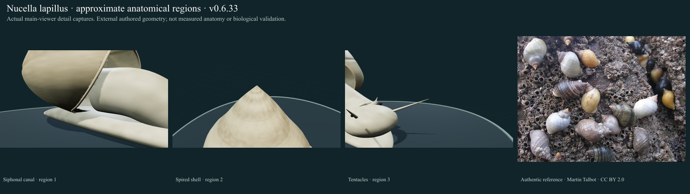
Reference: Martin Talbot · CC BY 2.0. Source caption, exact delivered checksum and scientific access scope remain in the linked body report.
- Siphonal canal: Approximate labelled region in an authored morphology study; compare the cited account and real reference image.
- Spired shell: Approximate labelled region in an authored morphology study; compare the cited account and real reference image.
- Tentacles: Approximate labelled region in an authored morphology study; compare the cited account and real reference image.
Still unresolved: Siphonal canal/lip teeth, eye placement and radular drilling/prey handling are incomplete; variable shell shape/colour is not an independently determined specimen. Detail views still show overly regular shell growth bands and simplified soft tissue, head/foot transitions and tentacle profiles; these are not photorealistic reconstructions. Siphonal canals, apertural unions, mantle bridges and some tissue regions remain partly obscured or approximate.
Buccinum undatum · Common whelk
Current model · Body changes and biological sources
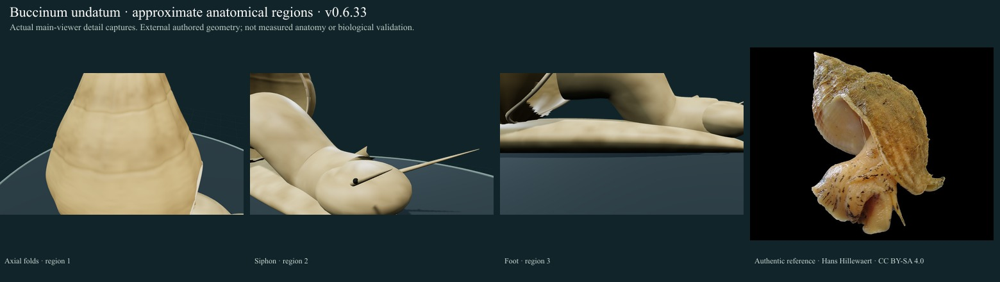
Reference: Hans Hillewaert · CC BY-SA 4.0. Source caption, exact delivered checksum and scientific access scope remain in the linked body report.
- Axial folds: Approximate labelled region in an authored morphology study; compare the cited account and real reference image.
- Siphon: Approximate labelled region in an authored morphology study; compare the cited account and real reference image.
- Foot: Approximate labelled region in an authored morphology study; compare the cited account and real reference image.
Still unresolved: The seven-to-eight-whorl source context is not a fitted whorl count or a complete internal shell model. Raised axial folds, canal, operculum and feeding remain incomplete. Detail views still show overly regular shell growth bands and simplified soft tissue, head/foot transitions and tentacle profiles; these are not photorealistic reconstructions. Siphonal canals, apertural unions, mantle bridges and some tissue regions remain partly obscured or approximate.
Crepidula fornicata · Slipper limpet
Current model · Body changes and biological sources
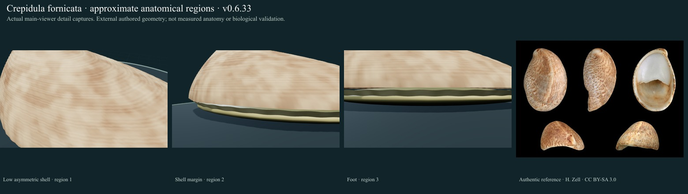
Reference: H. Zell · CC BY-SA 3.0. Source caption, exact delivered checksum and scientific access scope remain in the linked body report.
- Low asymmetric shell: Approximate labelled region in an authored morphology study; compare the cited account and real reference image.
- Shell margin: Approximate labelled region in an authored morphology study; compare the cited account and real reference image.
- Foot: Approximate labelled region in an authored morphology study; compare the cited account and real reference image.
Still unresolved: The curled spire, shelf rim, head and filter-feeding cilia are incomplete. The selected single shell is not the size/sex-structured living stack; filtration remains unavailable. Detail views still show overly regular shell growth bands and simplified soft tissue, head/foot transitions and tentacle profiles; these are not photorealistic reconstructions. Siphonal canals, apertural unions, mantle bridges and some tissue regions remain partly obscured or approximate.
Stagnicola palustris · Marsh pond snail
Current model · Body changes and biological sources
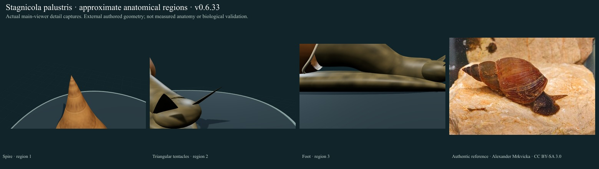
Reference: Alexander Mrkvicka · CC BY-SA 3.0. Source caption, exact delivered checksum and scientific access scope remain in the linked body report.
- Spire: Approximate labelled region in an authored morphology study; compare the cited account and real reference image.
- Triangular tentacles: Approximate labelled region in an authored morphology study; compare the cited account and real reference image.
- Foot: Approximate labelled region in an authored morphology study; compare the cited account and real reference image.
Still unresolved: The Stagnicola complex requires anatomical/genetic identification; the photo label is not independent confirmation. Fine whorls, genital anatomy and locomotion remain incomplete. Detail views still show overly regular shell growth bands and simplified soft tissue, head/foot transitions and tentacle profiles; these are not photorealistic reconstructions. Siphonal canals, apertural unions, mantle bridges and some tissue regions remain partly obscured or approximate.
Planorbarius corneus · Great ramshorn
Current model · Body changes and biological sources
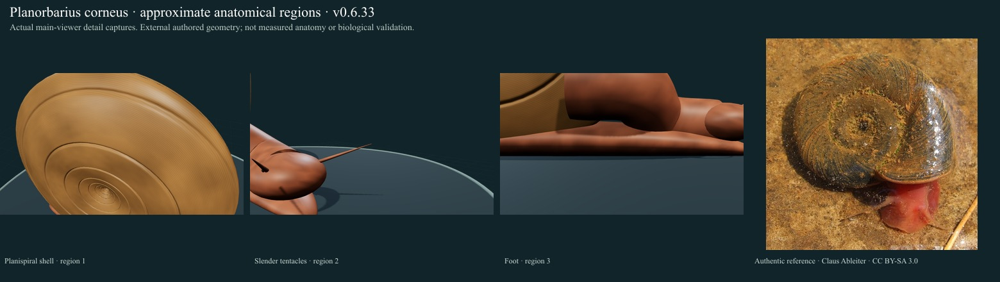
Reference: Claus Ableiter · CC BY-SA 3.0. Source caption, exact delivered checksum and scientific access scope remain in the linked body report.
- Planispiral shell: Approximate labelled region in an authored morphology study; compare the cited account and real reference image.
- Slender tentacles: Approximate labelled region in an authored morphology study; compare the cited account and real reference image.
- Foot: Approximate labelled region in an authored morphology study; compare the cited account and real reference image.
Still unresolved: Sinistral shell geometry and actual apertural/umbilical anatomy remain qualitative, with no measured shell/tissue fit. Red-brown is a selected phenotype; movement is only local tentacle bending. Detail views still show overly regular shell growth bands and simplified soft tissue, head/foot transitions and tentacle profiles; these are not photorealistic reconstructions. Siphonal canals, apertural unions, mantle bridges and some tissue regions remain partly obscured or approximate.
Cerastoderma edule · Common cockle
Current model · Body changes and biological sources
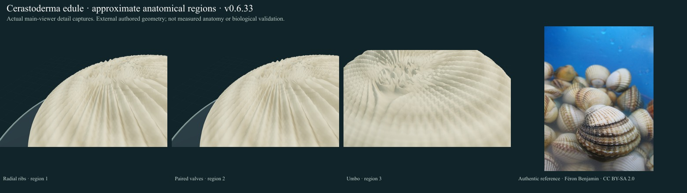
Reference: Féron Benjamin · CC BY-SA 2.0. Source caption, exact delivered checksum and scientific access scope remain in the linked body report.
- Radial ribs: Approximate labelled region in an authored morphology study; compare the cited account and real reference image.
- Paired valves: Approximate labelled region in an authored morphology study; compare the cited account and real reference image.
- Umbo: Approximate labelled region in an authored morphology study; compare the cited account and real reference image.
Still unresolved: Rib distribution, margin crenulation, hinge teeth, foot/siphons and natural burial are incomplete. The exposed model is a shell study, not a feeding posture. Detail views retain simplified shell texture, pigment and internal/soft anatomy; several close views show only a regional shell patch. Natural soft-tissue extension and substrate placement remain incomplete.
Ruditapes philippinarum · Manila clam
Current model · Body changes and biological sources
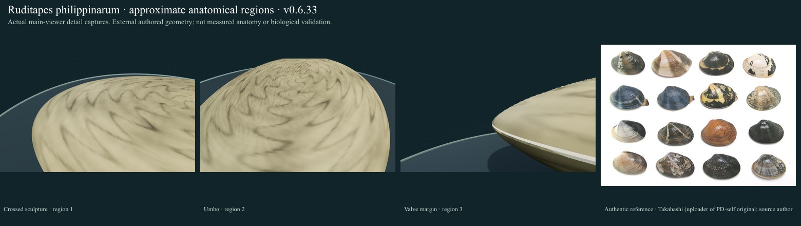
Reference: Takahashi (uploader of PD-self original; source author field blank) · Public domain. Source caption, exact delivered checksum and scientific access scope remain in the linked body report.
- Crossed sculpture: Approximate labelled region in an authored morphology study; compare the cited account and real reference image.
- Umbo: Approximate labelled region in an authored morphology study; compare the cited account and real reference image.
- Valve margin: Approximate labelled region in an authored morphology study; compare the cited account and real reference image.
Still unresolved: Lunule, cardinal teeth, pallial sinus and exact natural pattern variation remain incomplete. No individual in the multi-shell reference is geometrically fitted; filtration unavailable. Detail views retain simplified shell texture, pigment and internal/soft anatomy; several close views show only a regional shell patch. Natural soft-tissue extension and substrate placement remain incomplete.
Mercenaria mercenaria · Hard clam
Current model · Body changes and biological sources
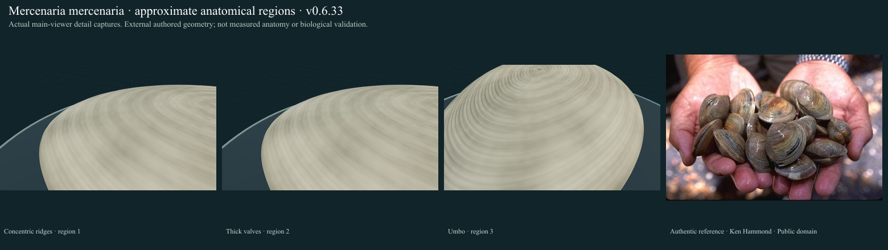
Reference: Ken Hammond · Public domain. Source caption, exact delivered checksum and scientific access scope remain in the linked body report.
- Concentric ridges: Approximate labelled region in an authored morphology study; compare the cited account and real reference image.
- Thick valves: Approximate labelled region in an authored morphology study; compare the cited account and real reference image.
- Umbo: Approximate labelled region in an authored morphology study; compare the cited account and real reference image.
Still unresolved: The subovate/triangular outline and anterior umbones, ligament/teeth, siphons and burrowing posture still need measured reconstruction. No daily shell deposition or pumping physiology is modeled. Detail views retain simplified shell texture, pigment and internal/soft anatomy; several close views show only a regional shell patch. Natural soft-tissue extension and substrate placement remain incomplete.
Ensis ensis · Sword razor shell
Current model · Body changes and biological sources
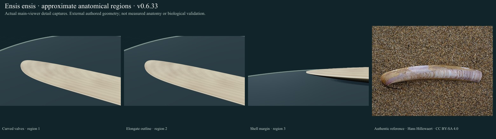
Reference: Hans Hillewaert · CC BY-SA 4.0. Source caption, exact delivered checksum and scientific access scope remain in the linked body report.
- Curved valves: Approximate labelled region in an authored morphology study; compare the cited account and real reference image.
- Elongate outline: Approximate labelled region in an authored morphology study; compare the cited account and real reference image.
- Shell margin: Approximate labelled region in an authored morphology study; compare the cited account and real reference image.
Still unresolved: End gapes, united siphons, foot and vertical sediment support are not reconstructed. This exposed shell presentation is not the living buried feeding posture. Detail views retain simplified shell texture, pigment and internal/soft anatomy; several close views show only a regional shell patch. Natural soft-tissue extension and substrate placement remain incomplete.
Mya arenaria · Soft-shell clam
Current model · Body changes and biological sources
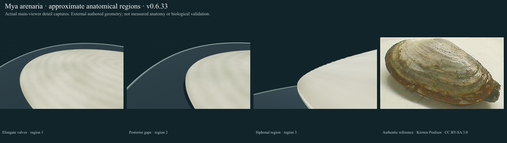
Reference: Kirsten Poulsen · CC BY-SA 3.0. Source caption, exact delivered checksum and scientific access scope remain in the linked body report.
- Elongate valves: Approximate labelled region in an authored morphology study; compare the cited account and real reference image.
- Posterior gape: Approximate labelled region in an authored morphology study; compare the cited account and real reference image.
- Siphonal region: Approximate posterior shell region only; extended siphons, pumping tissues and buried posture are not depicted.
Still unresolved: Posterior gape, spoon-shaped chondrophore, fused siphons and substrate contact remain incomplete. Filtering and burrowing are unavailable. Detail views retain simplified shell texture, pigment and internal/soft anatomy; several close views show only a regional shell patch. Natural soft-tissue extension and substrate placement remain incomplete.
Pinna nobilis · Fan mussel
Current model · Body changes and biological sources
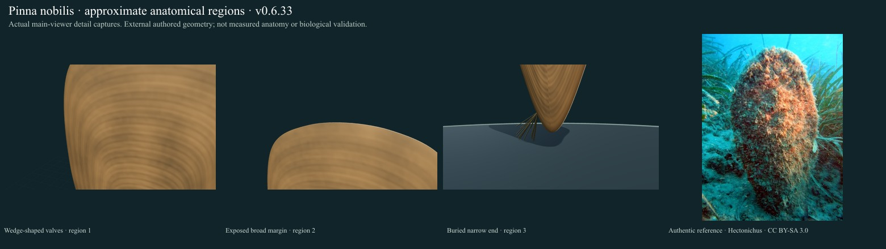
Reference: Hectonichus · CC BY-SA 3.0. Source caption, exact delivered checksum and scientific access scope remain in the linked body report.
- Wedge-shaped valves: Approximate labelled region in an authored morphology study; compare the cited account and real reference image.
- Exposed broad margin: Approximate labelled region in an authored morphology study; compare the cited account and real reference image.
- Buried narrow end: Selected narrow basal shell end, exposed for inspection. This view does not simulate natural sediment burial, depth or anchoring mechanics.
Still unresolved: Fine scales, byssus/substrate embedding and living encrustation are not measured; the model excludes the extensive epibionts visible in the photograph. No filtration mechanism. Detail views retain simplified shell texture, pigment and internal/soft anatomy; several close views show only a regional shell patch. Natural soft-tissue extension and substrate placement remain incomplete.
Chlamys islandica · Iceland scallop
Current model · Body changes and biological sources
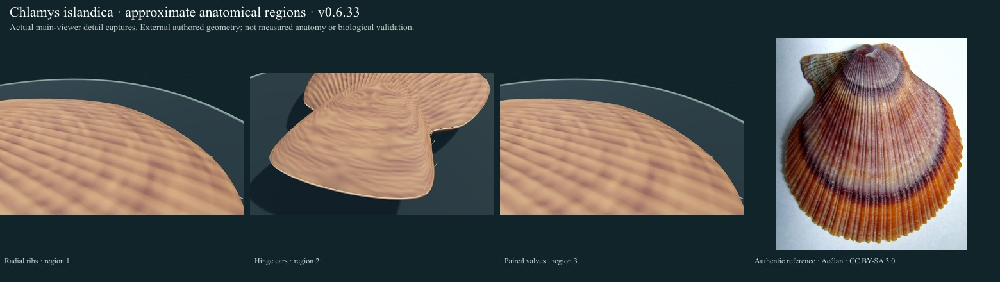
Reference: Acélan · CC BY-SA 3.0. Source caption, exact delivered checksum and scientific access scope remain in the linked body report.
- Radial ribs: Approximate labelled region in an authored morphology study; compare the cited account and real reference image.
- Hinge ears: Approximate labelled region in an authored morphology study; compare the cited account and real reference image.
- Paired valves: Approximate labelled region in an authored morphology study; compare the cited account and real reference image.
Still unresolved: Fine scaled riblets may be far more numerous in large animals; exact counts/ears/byssal notch/ctenolium are not fitted. The clap is a hinge study, not swimming. Narrow byssal/auricular notches are simplified to avoid overlapping loft triangles. Rib amplitude, radial fan angles, pigment and growth rings remain authored rather than measured; no biological swimming propulsion is implemented. Detail views retain simplified shell texture, pigment and internal/soft anatomy; several close views show only a regional shell patch. Natural soft-tissue extension and substrate placement remain incomplete.
Aequipecten opercularis · Queen scallop
Current model · Body changes and biological sources
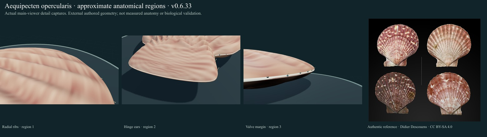
Reference: Didier Descouens · CC BY-SA 4.0. Source caption, exact delivered checksum and scientific access scope remain in the linked body report.
- Radial ribs: Approximate labelled region in an authored morphology study; compare the cited account and real reference image.
- Hinge ears: Approximate labelled region in an authored morphology study; compare the cited account and real reference image.
- Valve margin: Approximate labelled region in an authored morphology study; compare the cited account and real reference image.
Still unresolved: Anterior-ear asymmetry, margin fit, exact patterns and soft tissues remain approximate. Valve movement excludes jetting, thrust and calibrated adductor timing. Narrow byssal/auricular notches are simplified to avoid overlapping loft triangles. Rib amplitude, radial fan angles, pigment and growth rings remain authored rather than measured; no biological swimming propulsion is implemented. Detail views retain simplified shell texture, pigment and internal/soft anatomy; several close views show only a regional shell patch. Natural soft-tissue extension and substrate placement remain incomplete.